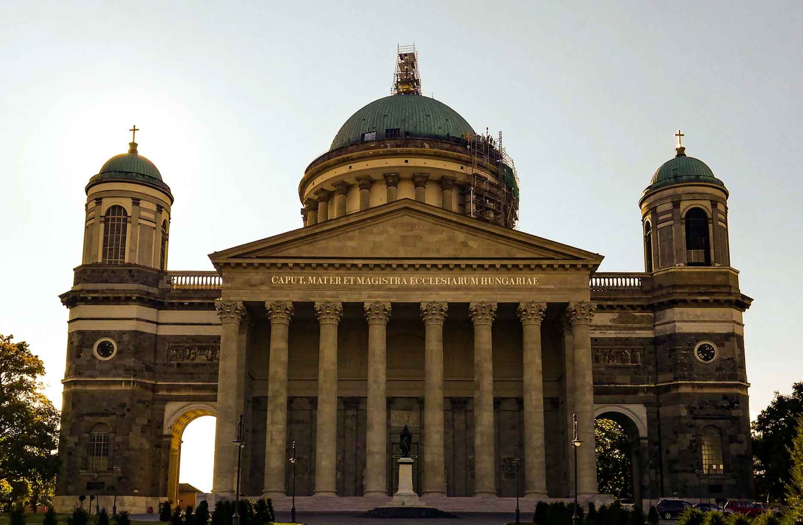
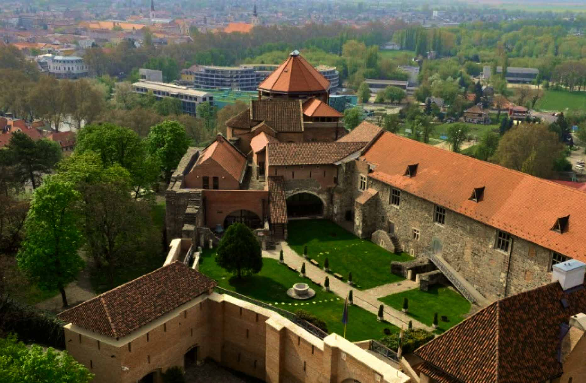
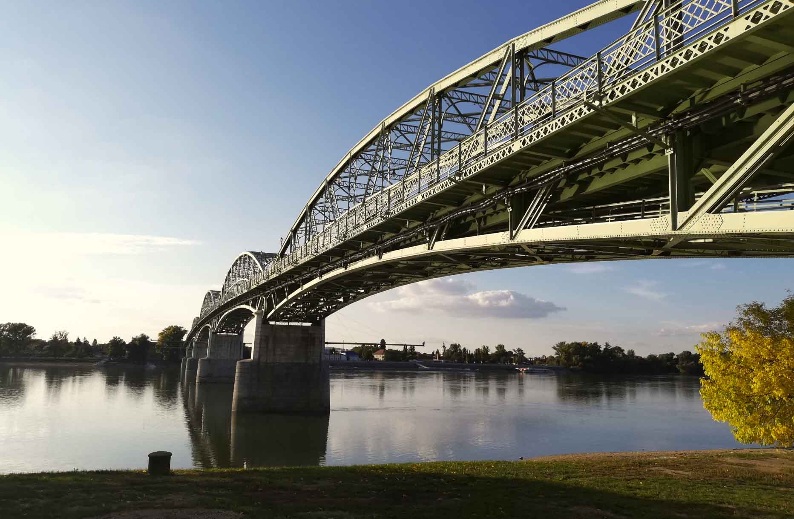
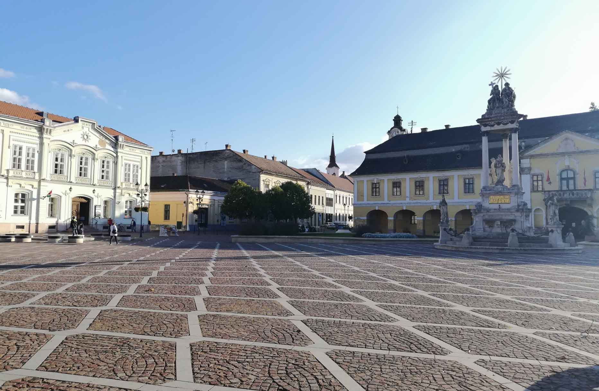
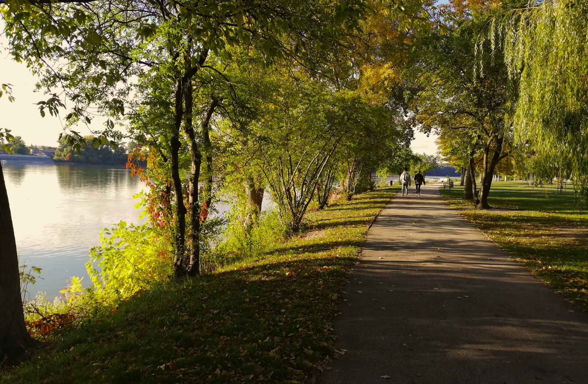
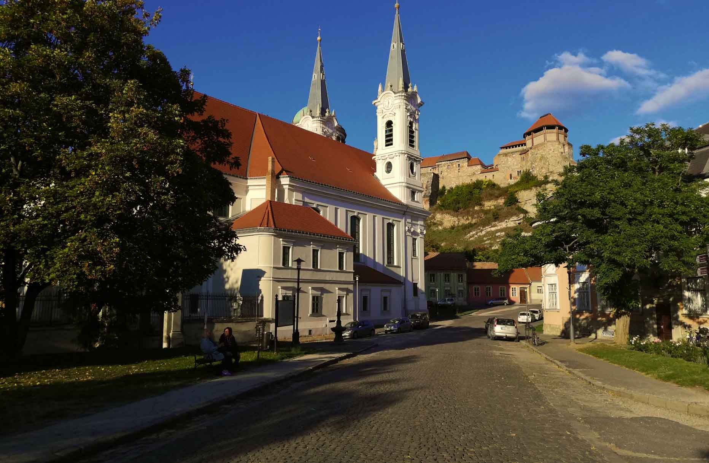
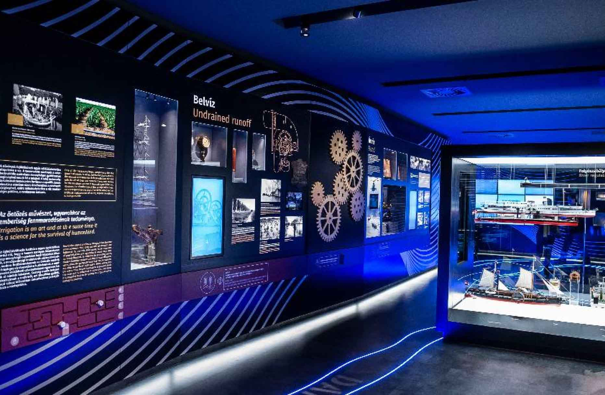
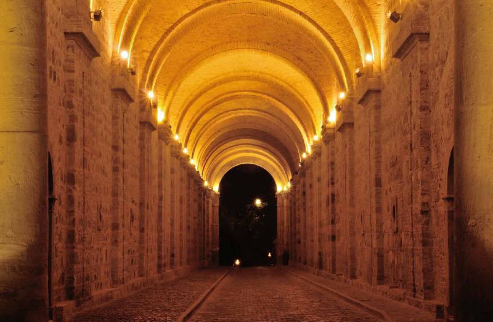
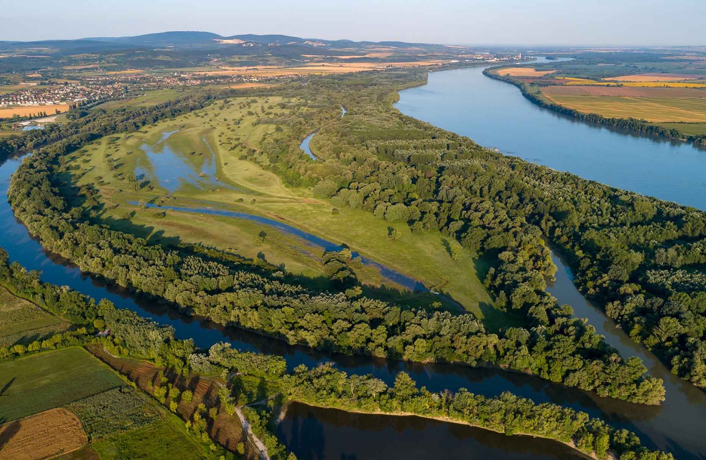
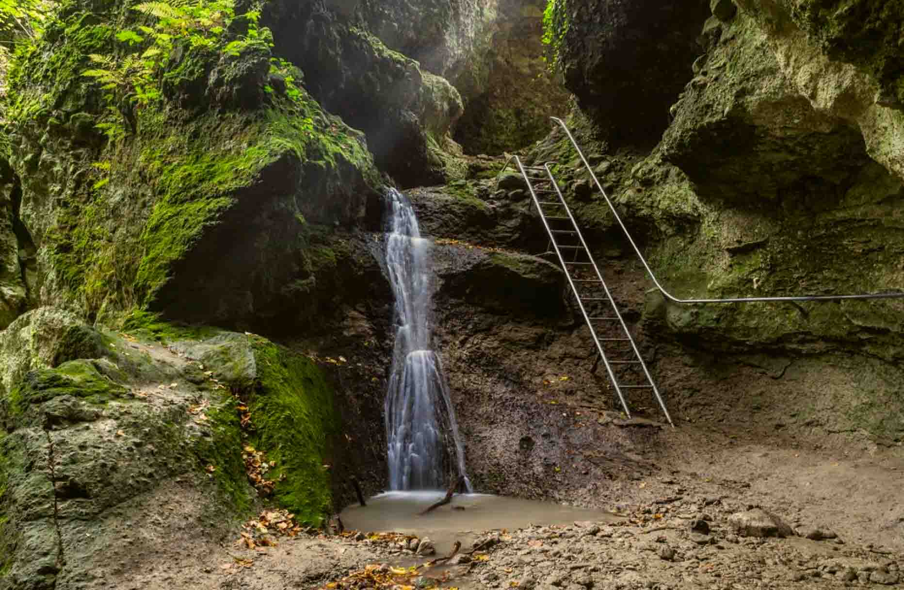

Esztergom is a really popular tourist destinations in Hungary.
It has many beautiful sites, and architectural masterpieces, and it lies directly next to the river Danube, which made it possible to the city to function as the center of trade and culture. It also has the title of being the headquarters of the Romain catholic church in Hungary. But now let’s just see what you should definitely take a look at when deciding to visit here.
1. Basilica in Esztergom

Picture: Éva Sasvári
Basilica is the biggest catholic church in Mid-Europe and the most known tourist sight in Esztergom. Its famous from its turquoise-colored dome, which was made from copper and became the symbol of the city.
Mass is being held regularly in the Basilica, but most time in the year, it is open for tourist. Inside you can see beautiful biblical wall paintings mostly made by painters from the renaissance Italy. There’s a museum under the building, where you can learn about the history of the city and of Basilica.
The website of Basilica can be reached by clicking here.
2. Castle Museum

Picture: MTI/Attila Kovács
If you decide to travel Esztergom, you must visit The Basilica. Basilica is the biggest catholic church in Mid-Europe and the most known tourist sight in Esztergom. Its famous from its turquoise-colored dome, which was made from copper and became the symbol of the city.
Mass is being held regularly in the Basilica, but most time in the year, it is open for tourist. Inside you can see beautiful biblical wall paintings mostly made by painters from the renaissance Italy. There’s a museum under the building, where you can learn about the history of the city and of Basilica.
The website of Basilica can be reached by clicking here .
3. Mary-Valeria Bridge

Picture: Éva Sasvári
The only Bridge you can find in Esztergom is the Mary-Valeria bridge. It connects Hungary directly to Slovakia, Sturovo. Because of this, you can easily pass the bridge and enter another country in having to walk only just a few meters.
The bridge was named after It was named after princess Mária Valéria, the daughter of Franz Joseph I. due to her active charities in the country.
The 496-meter-long steel bridge was built in two years. The bridge was blown up in World War II, and the 2001 reconstruction gave it its current look. Prior to its reconstruction, only boat or ferry transportation was possible between the two cities.
4. Széchenyi (main) Square

Picture: Éva Sasvári
You don’t want to miss the Main Square of the city called Széchenyi-square. It gives a cozy and welcoming feel, and you can actually find many great cafés and restaurants there. It’s the best place for spending time with friends and family, having a cup of coffee and just enjoying the atmosphere of the city. The Small-Danube Promenade can also be reached from here easily.
5. Small-Danube promenade Elizabeth Park

Picture: Éva Sasvári
Next to the main square, you can find the calm side of Esztergom. There are green areas which are perfect for taking a walk, cycle or have a picnic. The Small-Danube promenade follows a small section of the river Danube. The promenade directly connects to the Elisabeth Park, which is a large green space alongside the Grand-Danube. There you have the opportunity to do sports, or just enjoy the breathtaking view of the river.
6. Watertown

Picture: Éva Sasvári
Watertown is the northern part of Esztergom which is unique of the antique and renaissance architectural buildings. Taking a walk here gives you the feeling of being in a royal town. It got its name not only because it was built on the banks of the Little and Great Danube, but also because the city was rich in hot underground springs.
Nowadays there’s only one thermal pool (The Aqua Island) which can be found here. The old city’s former fortifications, city walls, medieval bastions and Turkish rondelles can still be seen next to the Small-Danube promenade and in Elisabeth-Park.
Visiting this part of Esztergom and spending a day in Aqua Island can be a really good program for families and for couples.
7. Danube Museum

Picture: magyarmuzeumok.hu
Built in 1730, the Duna Museum is a family-oriented attraction all about water. Here you can see and actually participate in an interactive exhibition. You’ll be guided through the past and present of the river and giving information about its importance in wildlife. The museum draws attention to the fragileness of nature and how climate change can cause a big difference in the natural habitat of the riversides. The museum is a perfect place for families to have fun and learn at the same time.
You can find the Danube Museum website here.
8. Dark Gate

Picture: esztergom.kornyeke.hu.
The gate can be found in the square under the Basilica. Its name comes from the times when it didn’t have a proper lighting, but nowadays this is the brightest and most beautiful tunnel in the city. Every night the tunnel lights up leading the way from the basilica to the city center. It’s also opens onto the archdiocese’s wine cellar, where you can get a taste of the best local wines.
In the 1956 revolution, the Dark Gate was the main spot of the happening events. A bus of civils was attacked by a Russian tank, causing the death of 14 people. Next to the gate, stands a memorial for the people who died there.
9. Duna-Ipoly National Park

Picture: dunaipoly.hu
The Duna-Ipoly National Park, maybe the most biodiverse natural environment in Hungary. It is a meeting point of rivers, hills, and plain which is why the area has a unique very colorful wildlife. In Hungary, every National Park has a symbolic sight, plant or animal in its logo. In Duna-Ipoly it’s the Rosalia longicorn or Mountain waiter which can only be found in the park’s area. There are also rare and endangered plant species like the lenten rose.
If you want to explore the park a good first step is to visit the Eco-Tourism Centre at Esztergom-Kertváros on the western edge of the park and hardly ten kilometres from the centre of Esztergom.
In the park there are several events organized for families and for tourists every season including hiking tours, cave tours, and also educational programs about the natural sights and wildlife.
You can read about programs on the parks official site .
10. Rám-Szakadék Waterfall

Picture: Palino Spisiak / shutterstock
Due to its stunning natural beauty, the Rám-Szakadék (ram-gorge) is rightly one of the most famous tourist destinations in the nature around this area. The hiking rail leading to it can be reached from a smaller village next to Esztergom, called Dömös.
The Rám-Szakadék itself is a gorge valley with volcanic origin. Its constricting rock walls are sometimes vertical, but there are also inwardly sloping walls. Its depth reaches 35 meters in several places, while its width does not even reach 3 meters in some places. Water is constantly dripping in the rock ledge, which can grow into a stream during snowmelt and heavy rains. Because of this, small floods aren’t uncommon so it’s best to come here in dry weather in summer.